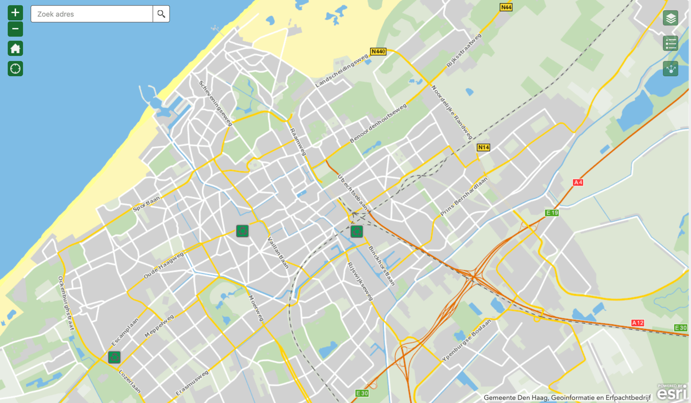

Grofvuil locaties in Den Haag
Neem altijd uw afvalpas mee bij een bezoek aan een afvalbrengstation. Zonder pas komt u niet binnen.
-
Plutostraat 1, 2516 AL (Binckhorst, stadsdeel Laak)
Maandag tot en met zaterdag van 8.30 tot 17.00 uur -
De Werf 11P, 2544 EH (Zichtenburg, stadsdeel Loosduinen)
Maandag tot en met zaterdag van 8.30 tot 17.00 uur (Let op: Geen tuinafval mogelijk) -
Uitenhagestraat 4, 2571 VV (bij de Loosduinsekade, stadsdeel Centrum)
Maandag tot en met zaterdag van 8.30 tot 17.00 uur (Let op: Geen tuinafval mogelijk)
